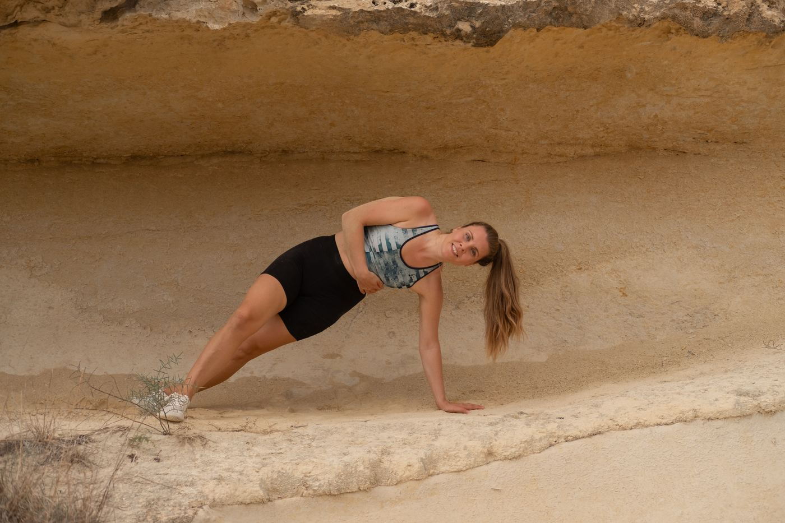

Träna systemen bakom varje rörelse.
Vetenskapligt grundade övningar för syn, balans och kroppsmedvetenhet som minskar muskelspänningar och förbättrar prestationen.
Träna systemen bakom varje rörelse.
Långt innan en muskel drar ihop sig har din hjärna redan bestämt hur den vill att din kropp ska röra sig.
Varje sekund tar den emot information från dina ögon, innerörat, leder, muskler och hud. Tillsammans avgör dessa system om rörelsen känns säker, koordinerad och effektiv — eller om kroppen svarar med spänning och skydd.
Neuroträning använder enkla, vetenskapligt grundade övningar för syn, balans, kroppsmedvetenhet, andning och koordination för att förbättra kvaliteten på den informationen.
Små förändringar i informationen som din hjärna tar emot kan ibland skapa förvånansvärt stora förändringar i hur din kropp rör sig och mår.
När du bokar den här sessionen får du:
- En introduktion till neuroträning
- Enkla övningar för syn, balans och kroppsmedvetenhet
- Videor och övningar du kan fortsätta träna hemma
Upptäck ett nytt sätt att förstå rörelse.
De flesta av oss har lärt oss att träna våra muskler. Få av oss har lärt oss att träna systemen som styr dem.
Oavsett om du återhämtar dig från en skada, känner dig stel eller bara är nyfiken på hur hjärnan påverkar rörelse, erbjuder neuroträning ett helt nytt perspektiv på hur kroppen fungerar.
Ibland förändrar en ny input hela utfallet.